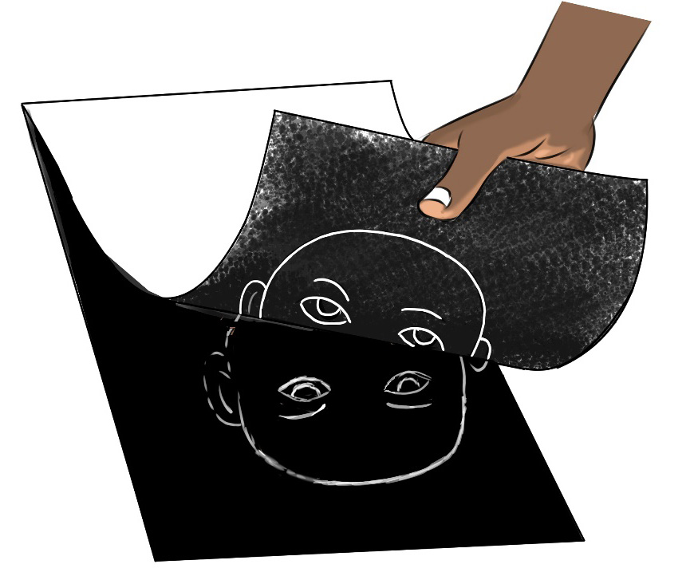

Figure 4.9: The monoprint revealing process from the drawn inked plate
Optional enhancements: Depending on your preferences and artistic vision, you can further enhance the monoprints using additional techniques like hand-colouring or mixed media elements.

Activity 4.5
Use various techniques of simple decorative monoprint to create prints on the media of your preference.
Revision Exercise
1.
Printmaking can be done in various methods. Define monoprinting and outline the characteristics which differentiate it from other printmaking methods.